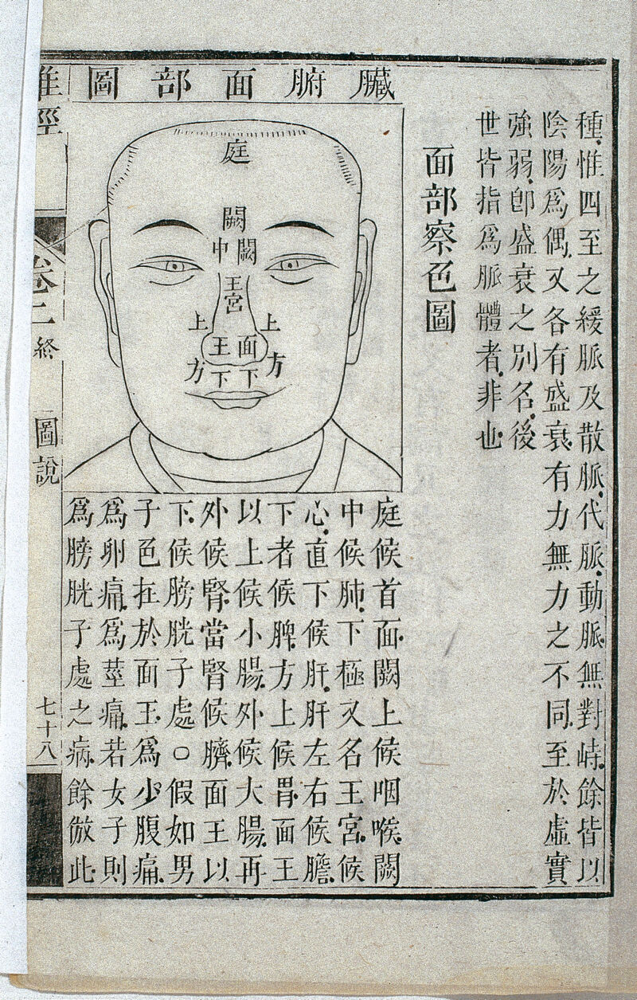

BIAS SYSTEM
/
LIVE CLASSIFICATION · 现场归类
CASE #EXH-00031
▍▌▎▍▎▌▍▎▍▌▎▍▎▍
--:--:--
LOCKED · 样本已锁定 · 等待分流
PHASE 03 · DETECTION COMPLETE
检测完成
请选择归类路径
同一份输入 · 将被写入不同档案
⇢ ROUTING TO 古代 · ANCIENT
01
/ 03
卷
六
已
裁

古代面学
相书卷宗 · 卷六
朱批 · VOL. 06 · CASE 027-A
十二宫
五官
气色
入 卷 宗
⇢ ROUTING TO 现代 · MODERN
02
/ 03
SKU-02
▍▌▎▍▎▌▍▎▍▌▎▍▍▎▌▍▎▍▍
SCANNING
67%
SAMPLE IMG · 320×360
◼ AI-LIVE
SCAN 67%
320×360 · 0.812
现代面学
身份清仓 · RECOMMEND
性别
收入
家庭
风险
★ SYSTEM RECOMMEND ★
入 清 仓
⇢ ROUTING TO 西方 · WESTERN
03
/ 03
W.P.A · ID 027-A
西方面学
冷档案识别 · COLD ARCHIVE
HT
178.0
CR
82.4
ARCHIVE LOCKED
侧影
测量
编号
入 档 案
※ 选择并不会改变输入 · 只会改变系统如何命名它 ※
✕